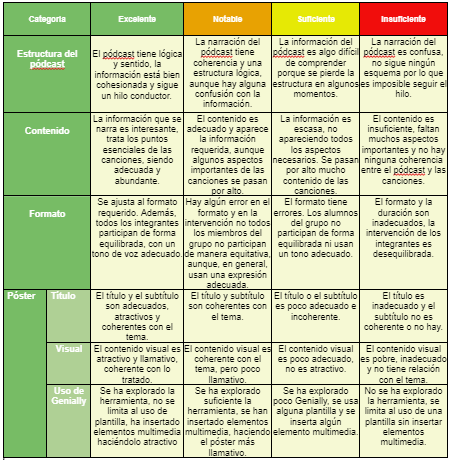

Herramienta 1: Rúbrica para evaluar el producto final (pódcast y póster) - 50%
Para evaluar el producto final es necesario apostar por un instrumento que permita la máxima objetividad, analizando aspectos más formales y creativos, la selección de información, la comprensión de la misma, la expresión y el empleo de la tecnología. Para ello he optado por realizar una rúbrica que se trata de una selección de los aspectos que pretendo evaluar junto a una serie de descriptores ordenados por niveles de ejecución.
Si he escogido este instrumento es porque permite acortar el tiempo de corrección además de ofrecer un feedback completo en todos los campos al alumnado. Al ser un documento que describe distintos niveles de calidad del proyecto los estudiantes son conscientes de los aspectos que les conviene mejorar de cara a proyectos futuros.
La idea de esta rúbrica es entregársela al grupo antes de iniciar la tarea para que conozcan lo que deben hacer para obtener la calificación máxima, lo que les hace responsables de su aprendizaje y de la nota final. Teniendo en cuenta que se dan descripciones precisas de lo que se desea en cada elemento, podemos esperar buenos resultados del proyecto, dentro del excelente y el notable en todos los campos. Sin embargo, de no ser el caso, emplear esta rúbrica me permitirá detectar posibles problemáticas en los estudiantes respecto al uso de la tecnología, a la búsqueda de información, a la redacción de un guion, etc. Por ejemplo, se contempla en la primera categoría valorar la estructura del pódcast lo que incluye la selección de información y la redacción del guion del pódcast. Detectar estas carencias hará posible proporcionar al alumnado herramientas necesarias para mejorar en los campos que se han evaluado más bajo en los proyectos que elaboremos en el futuro.
El momento de aplicación se dará al final de la actividad, una vez los alumnos hagan entrega del proyecto.
